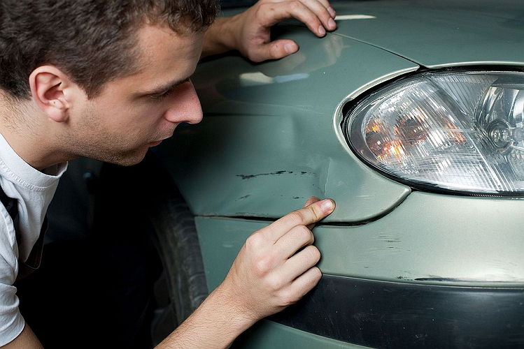
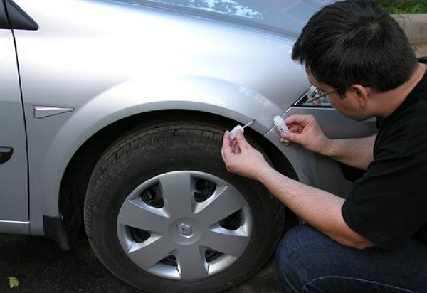
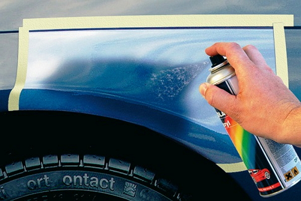

Выполнение косметического ремонта автомобиля требуется во многих случаях, связанных с повреждением кузовных элементов и бамперов. Зачастую такими дефектами являются вмятины и царапины кузова, которые существенно снижают презентабельность вашего автомобиля. При этом вопрос их устранения не представляет сложности, так как при наличии оборудования данная работа не отнимет много времени.
Сколы на кузове автомобиля связаны с комфортом и безопасностью пассажиров. На первый взгляд эта связь не столь очевидна, но даже небольшие царапины со временем могут привести появлению обширных очагов коррозии, поэтому ремонт сколов на кузове необходимо проводить своевременно.
Ремонт вмятин на кузовных металлических деталях кузова требует выполнения двух процедур: первая – это очистка поврежденного участка от сколов краски, выравнивание металла либо шпатлевка, что выбирается в после оценки объективной возможности выровнять поверхность металла. Вторым этапов выполняется покраска поврежденного участка. Это требует тщательного подбора цвета, для чего в нашем автосервисе есть необходимые возможности и высококвалифицированные мастера.
При нанесении царапин на поверхность кузовных деталей ремонтные работы во многом схожи с теми манипуляциями, которые выполняются при устранении и покраске вмятин. Также изначально нужно максимально качественно обработать поверхность металла и оценить вероятность появления коррозии на дне царапины. При этом существуют дефекты, которые не нарушают целостность металла. При их обнаружении его обработка не требуется, потому достаточно только выполнить этап покраски после абразивной полировки.
В рамках выполнения косметического ремонта на автомойке можно выполнять полировку кузова автомобиля. Бывает два ее вида, что различает их в зависимости от назначения. Абразивная полировка применятся при ремонте мелких дефектов кузова с повреждением краски, тогда как защитный вид полировки предназначен для предотвращения нежелательных внешних воздействий и повреждающих факторов.
Наномойка Антидождь Инновационный автошампунь Полировка «Жидкое стекло»